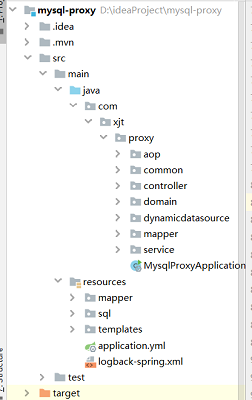
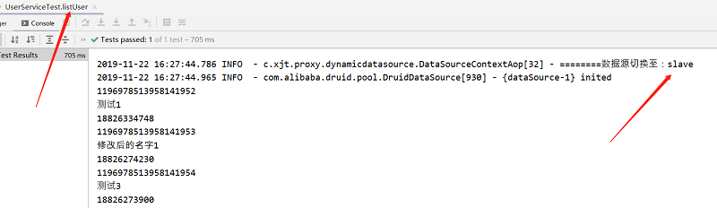
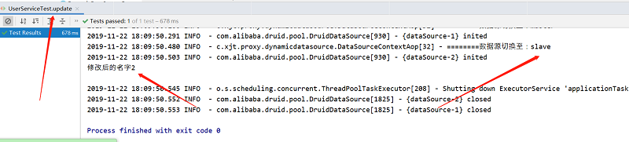

目录
入职新公司到现在也有一个月了，完成了手头的工作，前几天终于有时间研究下公司旧项目的代码。在研究代码的过程中，发现项目里用到了Spring Aop来实现数据库的读写分离，本着自己爱学习(我自己都不信...)的性格，决定写个实例工程来实现spring aop读写分离的效果。
数据库：MySql
库数量：2个，一主一从
关于mysql的主从环境部署之前已经写过文章介绍过了，这里就不再赘述，参考《手把手教你，如何在windows系统搭建mysql主从复制的环境》
首先，毫无疑问，先开始搭建一个SpringBoot工程，然后在pom文件中引入如下依赖：
<dependencies>
<dependency>
<groupId>com.alibaba</groupId>
<artifactId>druid-spring-boot-starter</artifactId>
<version>1.1.10</version>
</dependency>
<dependency>
<groupId>org.mybatis.spring.boot</groupId>
<artifactId>mybatis-spring-boot-starter</artifactId>
<version>1.3.2</version>
</dependency>
<dependency>
<groupId>tk.mybatis</groupId>
<artifactId>mapper-spring-boot-starter</artifactId>
<version>2.1.5</version>
</dependency>
<dependency>
<groupId>mysql</groupId>
<artifactId>mysql-connector-java</artifactId>
<version>8.0.16</version>
</dependency>
<!-- 动态数据源 所需依赖 ### start-->
<dependency>
<groupId>org.springframework.boot</groupId>
<artifactId>spring-boot-starter-jdbc</artifactId>
<scope>provided</scope>
</dependency>
<dependency>
<groupId>org.springframework.boot</groupId>
<artifactId>spring-boot-starter-aop</artifactId>
<scope>provided</scope>
</dependency>
<!-- 动态数据源 所需依赖 ### end-->
<dependency>
<groupId>org.springframework.boot</groupId>
<artifactId>spring-boot-starter-web</artifactId>
</dependency>
<dependency>
<groupId>org.projectlombok</groupId>
<artifactId>lombok</artifactId>
<optional>true</optional>
</dependency>
<dependency>
<groupId>com.alibaba</groupId>
<artifactId>fastjson</artifactId>
<version>1.2.4</version>
</dependency>
<dependency>
<groupId>org.springframework.boot</groupId>
<artifactId>spring-boot-starter-test</artifactId>
<scope>test</scope>
</dependency>
<dependency>
<groupId>org.springframework.boot</groupId>
<artifactId>spring-boot-starter-data-jpa</artifactId>
</dependency>
</dependencies>引入基本的依赖后，整理一下目录结构，完成后的项目骨架大致如下：

创建一张表user，在主库执行sql语句同时在从库生成对应的表数据
DROP TABLE IF EXISTS `user`;
CREATE TABLE `user` (
`user_id` bigint(20) NOT NULL COMMENT '用户id',
`user_name` varchar(255) DEFAULT '' COMMENT '用户名称',
`user_phone` varchar(50) DEFAULT '' COMMENT '用户手机',
`address` varchar(255) DEFAULT '' COMMENT '住址',
`weight` int(3) NOT NULL DEFAULT '1' COMMENT '权重，大者优先',
`created_at` datetime NOT NULL DEFAULT CURRENT_TIMESTAMP COMMENT '创建时间',
`updated_at` datetime DEFAULT CURRENT_TIMESTAMP ON UPDATE CURRENT_TIMESTAMP COMMENT '更新时间',
PRIMARY KEY (`user_id`)
) ENGINE=InnoDB DEFAULT CHARSET=utf8;
INSERT INTO `user` VALUES ('1196978513958141952', '测试1', '18826334748', '广州市海珠区', '1', '2019-11-20 10:28:51', '2019-11-22 14:28:26');
INSERT INTO `user` VALUES ('1196978513958141953', '测试2', '18826274230', '广州市天河区', '2', '2019-11-20 10:29:37', '2019-11-22 14:28:14');
INSERT INTO `user` VALUES ('1196978513958141954', '测试3', '18826273900', '广州市天河区', '1', '2019-11-20 10:30:19', '2019-11-22 14:28:30');application.yml，主要信息是主从库的数据源配置
server:
port: 8001
spring:
jackson:
date-format: yyyy-MM-dd HH:mm:ss
time-zone: GMT+8
datasource:
type: com.alibaba.druid.pool.DruidDataSource
driver-class-name: com.mysql.cj.jdbc.Driver
master:
url: jdbc:mysql://127.0.0.1:3307/user?serverTimezone=Asia/Shanghai&useUnicode=true&characterEncoding=UTF-8&autoReconnect=true&failOverReadOnly=false&useSSL=false&zeroDateTimeBehavior=convertToNull&allowMultiQueries=true
username: root
password:
slave:
url: jdbc:mysql://127.0.0.1:3308/user?serverTimezone=Asia/Shanghai&useUnicode=true&characterEncoding=UTF-8&autoReconnect=true&failOverReadOnly=false&useSSL=false&zeroDateTimeBehavior=convertToNull&allowMultiQueries=true
username: root
password:因为有一主一从两个数据源，我们用枚举类来代替，方便我们使用时能对应
@Getter
public enum DynamicDataSourceEnum {
MASTER("master"),
SLAVE("slave");
private String dataSourceName;
DynamicDataSourceEnum(String dataSourceName) {
this.dataSourceName = dataSourceName;
}
}数据源配置信息类 DataSourceConfig，这里配置了两个数据源，masterDb和slaveDb
@Configuration
@MapperScan(basePackages = "com.xjt.proxy.mapper", sqlSessionTemplateRef = "sqlTemplate")
public class DataSourceConfig {
// 主库
@Bean
@ConfigurationProperties(prefix = "spring.datasource.master")
public DataSource masterDb() {
return DruidDataSourceBuilder.create().build();
}
/**
* 从库
*/
@Bean
@ConditionalOnProperty(prefix = "spring.datasource", name = "slave", matchIfMissing = true)
@ConfigurationProperties(prefix = "spring.datasource.slave")
public DataSource slaveDb() {
return DruidDataSourceBuilder.create().build();
}
/**
* 主从动态配置
*/
@Bean
public DynamicDataSource dynamicDb(@Qualifier("masterDb") DataSource masterDataSource,
@Autowired(required = false) @Qualifier("slaveDb") DataSource slaveDataSource) {
DynamicDataSource dynamicDataSource = new DynamicDataSource();
Map<Object, Object> targetDataSources = new HashMap<>();
targetDataSources.put(DynamicDataSourceEnum.MASTER.getDataSourceName(), masterDataSource);
if (slaveDataSource != null) {
targetDataSources.put(DynamicDataSourceEnum.SLAVE.getDataSourceName(), slaveDataSource);
}
dynamicDataSource.setTargetDataSources(targetDataSources);
dynamicDataSource.setDefaultTargetDataSource(masterDataSource);
return dynamicDataSource;
}
@Bean
public SqlSessionFactory sessionFactory(@Qualifier("dynamicDb") DataSource dynamicDataSource) throws Exception {
SqlSessionFactoryBean bean = new SqlSessionFactoryBean();
bean.setMapperLocations(
new PathMatchingResourcePatternResolver().getResources("classpath*:mapper/*Mapper.xml"));
bean.setDataSource(dynamicDataSource);
return bean.getObject();
}
@Bean
public SqlSessionTemplate sqlTemplate(@Qualifier("sessionFactory") SqlSessionFactory sqlSessionFactory) {
return new SqlSessionTemplate(sqlSessionFactory);
}
@Bean(name = "dataSourceTx")
public DataSourceTransactionManager dataSourceTx(@Qualifier("dynamicDb") DataSource dynamicDataSource) {
DataSourceTransactionManager dataSourceTransactionManager = new DataSourceTransactionManager();
dataSourceTransactionManager.setDataSource(dynamicDataSource);
return dataSourceTransactionManager;
}
}设置路由的目的为了方便查找对应的数据源，我们可以用ThreadLocal保存数据源的信息到每个线程中，方便我们需要时获取
public class DataSourceContextHolder {
private static final ThreadLocal<String> DYNAMIC_DATASOURCE_CONTEXT = new ThreadLocal<>();
public static void set(String datasourceType) {
DYNAMIC_DATASOURCE_CONTEXT.set(datasourceType);
}
public static String get() {
return DYNAMIC_DATASOURCE_CONTEXT.get();
}
public static void clear() {
DYNAMIC_DATASOURCE_CONTEXT.remove();
}
}获取路由
public class DynamicDataSource extends AbstractRoutingDataSource {
@Override
protected Object determineCurrentLookupKey() {
return DataSourceContextHolder.get();
}
}AbstractRoutingDataSource的作用是基于查找key路由到对应的数据源，它内部维护了一组目标数据源，并且做了路由key与目标数据源之间的映射，提供基于key查找数据源的方法。
为了可以方便切换数据源，我们可以写一个注解，注解中包含数据源对应的枚举值，默认是主库，
@Retention(RetentionPolicy.RUNTIME)
@Target(ElementType.METHOD)
@Documented
public @interface DataSourceSelector {
DynamicDataSourceEnum value() default DynamicDataSourceEnum.MASTER;
boolean clear() default true;
}到这里，aop终于可以现身出场了，这里我们定义一个aop类，对有注解的方法做切换数据源的操作，具体代码如下：
@Slf4j
@Aspect
@Order(value = 1)
@Component
public class DataSourceContextAop {
@Around("@annotation(com.xjt.proxy.dynamicdatasource.DataSourceSelector)")
public Object setDynamicDataSource(ProceedingJoinPoint pjp) throws Throwable {
boolean clear = true;
try {
Method method = this.getMethod(pjp);
DataSourceSelector dataSourceImport = method.getAnnotation(DataSourceSelector.class);
clear = dataSourceImport.clear();
DataSourceContextHolder.set(dataSourceImport.value().getDataSourceName());
log.info("========数据源切换至：{}", dataSourceImport.value().getDataSourceName());
return pjp.proceed();
} finally {
if (clear) {
DataSourceContextHolder.clear();
}
}
}
private Method getMethod(JoinPoint pjp) {
MethodSignature signature = (MethodSignature)pjp.getSignature();
return signature.getMethod();
}
}到这一步，我们的准备配置工作就完成了，下面开始测试效果。
先写好Service文件，包含读取和更新两个方法，
@Service
public class UserService {
@Autowired
private UserMapper userMapper;
@DataSourceSelector(value = DynamicDataSourceEnum.SLAVE)
public List<User> listUser() {
List<User> users = userMapper.selectAll();
return users;
}
@DataSourceSelector(value = DynamicDataSourceEnum.MASTER)
public int update() {
User user = new User();
user.setUserId(Long.parseLong("1196978513958141952"));
user.setUserName("修改后的名字2");
return userMapper.updateByPrimaryKeySelective(user);
}
@DataSourceSelector(value = DynamicDataSourceEnum.SLAVE)
public User find() {
User user = new User();
user.setUserId(Long.parseLong("1196978513958141952"));
return userMapper.selectByPrimaryKey(user);
}
}根据方法上的注解可以看出，读的方法走从库，更新的方法走主库，更新的对象是userId为1196978513958141953 的数据，
然后我们写个测试类测试下是否能达到效果，
@RunWith(SpringRunner.class)
@SpringBootTest
class UserServiceTest {
@Autowired
UserService userService;
@Test
void listUser() {
List<User> users = userService.listUser();
for (User user : users) {
System.out.println(user.getUserId());
System.out.println(user.getUserName());
System.out.println(user.getUserPhone());
}
}
@Test
void update() {
userService.update();
User user = userService.find();
System.out.println(user.getUserName());
}
}测试结果：
1、读取方法

2、更新方法

执行之后，比对数据库就可以发现主从库都修改了数据，说明我们的读写分离是成功的。当然，更新方法可以指向从库，这样一来就只会修改到从库的数据，而不会涉及到主库。
上面测试的例子虽然比较简单，但也符合常规的读写分离配置。值得说明的是，读写分离的作用是为了缓解写库，也就是主库的压力，但一定要基于数据一致性的原则，就是保证主从库之间的数据一定要一致。如果一个方法涉及到写的逻辑，那么该方法里所有的数据库操作都要走主库。
假设写的操作执行完后数据有可能还没同步到从库，然后读的操作也开始执行了，如果这个读取的程序走的依然是从库的话，那么就会出现数据不一致的现象了，这是我们不允许的。
最后发一下项目的github地址，有兴趣的同学可以看下，记得给个star哦
地址：https://github.com/Taoxj/mysql-proxy